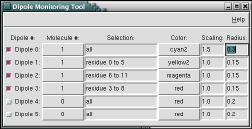
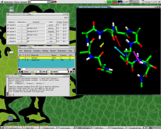

 The DipWatch plugin provides functionality to monitor dipole moments of molecules or parts thereof via the VMD atom selection syntax. It provides a GUI to manage up to six dipoles and allows to set several aspects of them.
DipWatch uses the charge information stored internally in VMD when you load a supported topology file or load charge information from a script. The actual computation of the dipole moment is delegated to the 'measure dipole' command, and the position of the center of the dipole is determined via 'measure center'.
 The graphical user interface consists of a table where each row contains the settings for one dipole representation. The checkbutton in the first column allows to en- or disable the representation. The subsequent columns allow selection of the molecule id, atom selection string, atom selection update, color, scaling factor or the arrow length and its radius. If you change any of the fields, the display should be updated as soon as the focus changes or a button is pressed.
{kind=link}